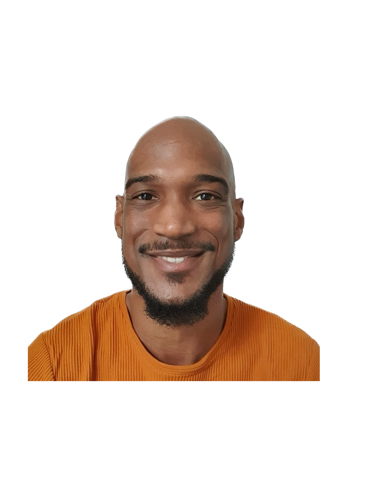

Curriculeum Vitae
Fabian Strijder
Allround Pedagogisch Werker

Naam
Fabian Ewald Raferty Strijder
Geboortedatum
15-01-1988
Rijbewijs
A & B
Talen
- Nederlands (moedertaal)
- Engels (vloeiend)
- Surinaams (goed)
Competenties en Vaardigheden
- Aanpassingsvermogen
- Communicatieve vaardigheden
- Betrokkenheid
- Collegialiteit
- Leervermogen
- Stressbestendigheid
- Zelfkennis
Social Media
Samenvatting
Dicht bij mezelf blijven als persoon door mijn normen en waarden intact te houden is wat voor mij werkt. Dit wil zeggen dat ik altijd te werk ga vanuit een liefdevolle, deëscalerende en non- provocerende gedachtegang.
Opleidingen
Sociaal Pedagogisch Werker (niveau 4)
ROCvA, Amsterdam
September 2010 - Maart 2013 (afgerond)
Bewust met zoveel mogelijk verschillende doelgroepen te werk gegaan. Hierdoor leerde ik al gauw in mijn ontwikkeling hoe belangrijk en doorbrekend schakelen en aanpassen op de juiste momenten kan zijn.
PABO
InHolland, Haarlem
September 2013 - Mei 2014 (niet afgerond)
Na een jaar ben ik met de opleiding gestopt en ben ik mij
fulltime gaan storten op werken als Pedagogisch Werker.
Werkervaring
Socius Wonen, Woonbegeleider (beschermd wonen)
Den Haag
April 2022 - Juni 2023
- Noodopvang vluchtelingen/asielzoekers
- Aanspreekpunt tussen bewoners en instanties (gemeente, school etc.)
- Zelfredzaamheid bevorderen
Woonfervent, Woonbegeleider (begeleid wonen)
Rijswijk
Oktober 2022 - Juni 2023
- Opvang voor Statushouders
- Eerst met de bewoners gestart in het Best Western Hotel (Rijswijk) en daarna de doorstroom naar tijdelijke Woonunits begeid.
Statushouders klaarstomen voor wanneer zij een woning toegewezen kregen.
- Bevordering zelfredzaamheid in de Nederlandse maatschappij
- Aanspreekpunt tussen Statushouders en verschillende partijen (gemeente, school, werkgevers, huisartsen etc.)
- Ondersteuning bij gezinsherenigingen.
Verscheidene zorgorganisaties, Allround Pedagogisch Werker
Landelijk
Augustus 2014 - Heden
Als ZZP’er reis ik door heel het land om zowel kort- als langdurig bij verschillende organisaties te ondersteunen in verscheidene casuïstieken.
Denk aan:
- De Hartekampgroep
- Antes
- Dijk en Duin
- ‘s-Heerenloo
- Daelzicht
Dit differentieert van het behandelen, trainen tot aan het begeleiden van bewoners en zorgvragers in de:
- GGZ
- Gehandicaptenzorg (EMB, NAH)
- Jeugdzorg
- Ouderenzorg
Onderscheidingen, certificeringen of andere prestaties
- BHV (april 2022)
- The Complete 2023 Web Development Bootcamp by Angela Yu
Meer over mij
Hobby's
Contactgegevens